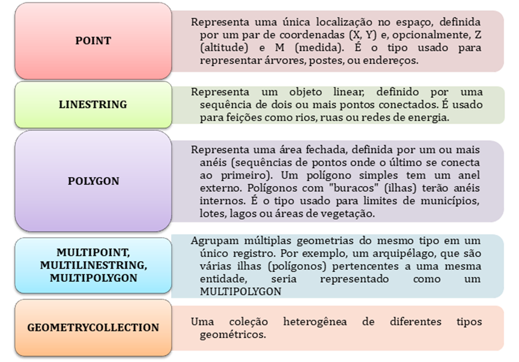

Capítulo 7: Banco de Dados com PostGIS
Neste capítulo, mergulharemos no universo dos bancos de dados geoespaciais utilizando o PostGIS, a extensão que transforma o robusto PostgreSQL em uma poderosa ferramenta para armazenamento, gerenciamento e análise de informações geográficas. Iniciaremos com a configuração de um ambiente local, aprenderemos a importar dados e a realizar consultas espaciais, e finalizaremos com as práticas para conectar e gerenciar um banco de dados em rede, preparando você para cenários de produção.
7.1 Introdução ao Banco de Dados Geoespacial com PostGIS
7.1.1 O que é o PostGIS e por que usá-lo?
O PostGIS é uma extensão que se instala sobre o PostgreSQL, um robusto sistema de gerenciamento de banco de dados (SGBD) de código aberto. Na prática, ele "ensina" o banco de dados a entender, armazenar e analisar dados geográficos. Com o PostGIS, uma tabela de banco de dados pode ter uma coluna para guardar geometrias (pontos, linhas e polígonos) da mesma forma que já guarda textos, números ou datas.
Mas por que um técnico em geoprocessamento deveria deixar de usar apenas os arquivos que já conhece? A resposta está nas limitações que aparecem em projetos reais:
Tabela 6‑1 : limitações que aparecem em projetos reais
7.1.2 Vantagens sobre formatos baseados em arquivo
Para entender o salto de qualidade que o PostGIS oferece, basta analisar um cenário de trabalho em equipe. Com formatos baseados em arquivo, as limitações operacionais tornam-se evidentes:
· Com Shapefiles: O principal desafio é a gestão de múltiplos arquivos para uma única camada vetorial (no mínimo, .shp, .shx, .dbf). Em um projeto colaborativo, a falta de uma política rígida para nomear versões (areas_verdes_v1, areas_verdes_final) rapidamente leva à desorganização e ao uso de dados desatualizados, especialmente quando há troca de arquivos compactados.
· Com GeoPackage: Este formato resolve o problema dos múltiplos arquivos, consolidando os dados em um único arquivo .gpkg. Contudo, sua principal limitação em ambientes colaborativos é o acesso para escrita. Para garantir a integridade dos dados, apenas um usuário pode realizar operações de edição (criar, alterar ou deletar feições) por vez. Os demais usuários ficam com acesso de somente leitura, criando um gargalo no fluxo de trabalho.
Com o PostGIS, o fluxo de trabalho é transformado, superando essas barreiras:
Tabela 6‑2
Em resumo, enquanto formatos baseados em arquivo são adequados para projetos individuais e para a entrega de dados, o PostGIS é a plataforma profissional para o desenvolvimento e gerenciamento contínuo de projetos, especialmente os colaborativos e de grande escala.
7.2 Características Fundamentais e Padrões
O PostGIS é muito mais do que um simples local de armazenamento para geometrias. Seu verdadeiro poder reside em um conjunto de características que o transformam em uma plataforma completa para análise geoespacial. A seguir, detalhamos os pilares que tornam o PostGIS uma ferramenta tão robusta.
7.2.1 Tipos de Dados Geométricos Vetoriais
Para representar o mundo real, o PostGIS oferece um conjunto de tipos de dados geométricos. Eles seguem o padrão internacional OGC, garantindo a compatibilidade com outros softwares SIG. Os tipos essenciais são:
Tabela 6‑3

7.2.2 O Modelo de Dados Matricial (Raster)
Enquanto o modelo vetorial descreve o mundo através de objetos com fronteiras discretas, muitos fenômenos geográficos, como a elevação de um terreno, a temperatura de uma área ou uma imagem de satélite, são de natureza contínua. Para representar essa realidade, utilizamos o modelo de dados matricial (ou raster). Um raster representa uma área geográfica como uma grade contínua de células, conhecidas como pixels. Cada pixel possui um valor numérico que corresponde à medição do fenômeno naquele ponto. A extensão postgis_raster habilita o PostgreSQL a armazenar e analisar esses dados, permitindo que o poder do SQL seja aplicado a imagens e grades de valores.
7.2.3 Modelo de Dados Topológico
Além de saber a forma e a localização de uma feição, em muitos projetos de geoprocessamento é crucial garantir a integridade das relações entre elas. Para isso, utilizamos um modelo de dados topológico. A topologia não é um novo tipo de geometria, mas um conjunto de regras matemáticas que governa as relações de adjacência (o que está ao lado de quê), conectividade (o que está ligado a quê) e continência (o que está dentro de quê). Em vez de armazenar polígonos e linhas completos, um modelo topológico os decompõe em elementos primitivos compartilhados (nós, arestas e faces). Isso impede erros comuns, como a sobreposição de lotes em um cadastro ou a existência de vãos entre eles, garantindo a qualidade e a consistência lógica dos dados. A extensão postgis_topology é a ferramenta que implementa essa capacidade.
7.2.4 Índices Espaciais para Otimização de Consultas (GiST)
Ao lidar com milhares ou milhões de feições, uma consulta como "selecione todos os lotes dentro deste bairro" seria extremamente lenta se o banco de dados precisasse testar cada um dos lotes existentes. Para resolver isso, o PostGIS utiliza índices espaciais.
Pense no índice de um atlas: em vez de folhear página por página, você vai direto à seção que contém o mapa da sua região de interesse. Um índice espacial no PostGIS, geralmente do tipo GiST (Generalized Search Tree), funciona de forma análoga. Ele organiza as geometrias em uma árvore hierárquica baseada em sua localização e extensão (seu "retângulo envolvente" ou bounding box).
Quando uma consulta espacial é executada, o PostGIS usa o índice para descartar rapidamente as geometrias que estão fora da área de interesse, analisando em detalhe apenas um pequeno subconjunto de dados. A criação de um índice espacial em colunas de geometria é uma prática essencial para garantir a performance de um banco de dados geoespacial.
7.2.5 A Vasta Gama de Funções Espaciais
A verdadeira "mágica" do PostGIS acontece por meio de suas centenas de funções espaciais, que permitem realizar análises diretamente no banco de dados com comandos SQL. Elas podem ser agrupadas em categorias, como:
Tabela 6‑4
7.2.6 Interoperabilidade e o Padrão OGC
A interoperabilidade — a capacidade de diferentes sistemas trocarem e utilizarem informações — é vital no mundo geoespacial. O PostGIS é um exemplo de implementação da especificação SFS (Simple Feature Specification for SQL) do Open Geospatial Consortium (OGC).
O OGC é um consórcio internacional que define padrões para dados e serviços geoespaciais. Por ser aderente a esses padrões, o PostGIS garante que:
· Os dados armazenados possam ser lidos e entendidos por uma vasta gama de softwares (QGIS, ArcGIS, GeoServer, etc.).
· Os nomes e comportamentos das funções espaciais (ST_Area, ST_Intersects, etc.) sigam uma convenção global, facilitando a migração de conhecimento entre diferentes sistemas.
Essa conformidade com o padrão OGC é o que permite que o ecossistema SIG funcione de forma integrada, onde o PostGIS atua como um pilar central e confiável.
7.2.7 O Ecossistema de Extensões PostGIS: Uma Visão Geral
É um erro comum pensar no PostGIS como um único "pacote". Na realidade, ele é um ecossistema de extensões modulares, onde cada uma habilita um conjunto específico de funcionalidades no PostgreSQL. Essa abordagem permite que os administradores de banco de dados instalem apenas o que é necessário para o projeto, otimizando recursos e mantendo o sistema organizado. As extensões mais importantes são:
7.2.7.1 Extensões Fundamentais
Este é o trio que forma a base para a grande maioria dos projetos em geoprocessamento.
· postgis: Considerado o coração do sistema, esta é a extensão principal e obrigatória. Ela fornece o suporte para os tipos de dados vetoriais (como POINT, LINESTRING e POLYGON), implementa a vasta gama de funções espaciais (como ST_Intersection, ST_Buffer, etc.) e habilita o uso de índices espaciais para otimizar consultas.
· postgis_raster: Esta extensão capacita o banco de dados a armazenar, gerenciar e analisar dados matriciais (raster). Com ela, é possível executar operações de map álgebra e consultas em imagens de satélite, modelos digitais de elevação e outros dados raster diretamente via SQL.
· postgis_topology: Implementa um modelo de dados topológico robusto. Seu propósito é permitir a criação e validação de regras de integridade espacial, garantindo que as feições de uma ou mais camadas se relacionem de maneira consistente (por exemplo, "limites de municípios não podem se sobrepor" ou "quadras devem estar contidas dentro de um bairro").
7.2.7.2 Extensões para Análise Avançada
Para aplicações que demandam capacidades mais específicas, o ecossistema oferece módulos especializados.
· postgis_sfcgal: Fornece uma interface para a biblioteca CGAL (Computational Geometry Algorithms Library), oferecendo funções avançadas para processamento de geometrias 2D e, especialmente, 3D. É utilizada para validação de sólidos, reparo de geometrias inválidas e operações booleanas mais robustas, sendo essencial para quem trabalha com modelos 3D de cidades ou análises volumétricas.
· pointcloud_postgis: Uma extensão desenvolvida para lidar com nuvens de pontos, como as geradas por sensores LiDAR. Ela introduz tipos de dados e funções otimizadas para armazenar, indexar e analisar bilhões de pontos de forma eficiente.
7.2.7.3 Extensões Utilitárias e de Integração
Estes módulos atuam como ferramentas de apoio, facilitando a importação de dados e a comunicação com outros sistemas.
· postgis_tiger_geocoder: Um geocodificador de endereços completo, projetado para funcionar com os dados públicos TIGER, do censo dos Estados Unidos. Permite transformar endereços textuais (ex: "1600 Amphitheatre Parkway, Mountain View, CA") em coordenadas geográficas.
· postgres_fdw: O "Foreign Data Wrapper" (Invólucro de Dados Externos) do PostgreSQL é uma ferramenta poderosa que permite acessar tabelas localizadas em outros servidores PostgreSQL como se fossem tabelas locais. No contexto do geoprocessamento, isso significa que um banco de dados pode consultar diretamente uma camada armazenada em outro banco PostGIS, sem a necessidade de replicar os dados.
Compreender essa estrutura modular é fundamental para explorar todo o potencial do PostGIS como uma plataforma flexível e poderosa para soluções geoespaciais.
7.3 Configurando o Ambiente de Trabalho
Com os conceitos fundamentais apresentados, esta seção aborda a parte prática da configuração inicial do ambiente. As etapas a seguir demonstram como criar usuários e banco de dados habilitados para o PostGIS utilizando o pgAdmin 4, a ferramenta de administração padrão do PostgreSQL.
7.3.1 Pré-requisitos
Este guia assume que o PostgreSQL e a ferramenta de gerenciamento pgAdmin 4 já estão instalados no sistema. A maioria dos pacotes de instalação do PostgreSQL já inclui a extensão PostGIS, que precisa apenas ser habilitada no banco de dados, conforme demonstrado nos passos seguintes.
7.3.2 Criando Usuários/Grupos para o Banco de Dados no pgAdmin 4
Por questões de segurança e seguindo as boas práticas da indústria, é fundamental não utilizar o usuário padrão postgres para as operações diárias. Este usuário é o Superusuário (ou superuser), análogo a um administrador com a chave mestra do sistema. Ele possui permissão irrestrita para executar qualquer comando, inclusive a modificação ou exclusão de bancos de dados inteiros, ignorando todas as barreiras de segurança.
O método correto e seguro é operar com base no Princípio do Menor Privilégio: cada usuário deve ter apenas as permissões estritamente necessárias para realizar seu trabalho. Portanto, para cada projeto ou aplicação, deve-se criar um usuário específico com um conjunto limitado e bem definido de permissões.
Para facilitar o entendimento, podemos pensar no servidor como um edifício corporativo. O servidor PostgreSQL representa o prédio inteiro, os bancos de dados seriam os andares ou departamentos, e os schemas, as seções específicas dentro de cada andar. As tabelas e objetos são os arquivos e estações de trabalho. As funções (roles) são os crachás que determinam o acesso de cada pessoa.
Complementando essa estrutura, o PostgreSQL permite organizar as permissões de forma ainda mais eficiente por meio das chamadas funções de grupo (Group Roles). Diferente dos usuários comuns, essas funções não acessam o banco diretamente — elas existem exclusivamente para agrupar permissões que serão herdadas pelos usuários associados a elas. Podemos pensar nos grupos como cargos ou departamentos dentro da organização, como “equipe de geoprocessamento” ou “administração de dados”. Em vez de configurar permissões individualmente para cada usuário, basta atribuí-las ao grupo e, em seguida, vincular os usuários relevantes a ele. Com isso, todos os membros herdam automaticamente os mesmos privilégios, o que simplifica a gestão de acessos e garante consistência nas permissões aplicadas. Esse modelo é especialmente útil em ambientes com vários usuários desempenhando papéis semelhantes, como equipes técnicas que acessam e atualizam as mesmas tabelas.
A seguir, detalha-se o processo de criação de um novo usuário utilizando o pgAdmin 4.
No painel lateral do pgAdmin, expanda o servidor conectado e localize a opção Login/Funções de Grupo. Clique com o botão direito e escolha Criar > Função de Login/Grupo...
Figura 6‑1 : Acesso ao menu para a criação de um novo usuário (Função de Login/Grupo) no pgAdmin 4
7.3.2.1 Aba Geral
Na aba Geral, informe um nome identificador para o usuário. Use nomes curtos, em letras minúsculas e sem espaços. Por exemplo, "Administrador_GIS".

Figura 6‑2 : Definição do nome do novo usuário na aba "Geral" da janela de criação de Função de Login/Grupo.
7.3.2.2 Aba Definição
Na aba Definição, crie uma senha segura. Esta senha será utilizada para autenticação ao acessar o servidor. Nesta mesma aba, também é possível definir dois parâmetros importantes:
· Data de expiração: especifica até quando esse usuário poderá se autenticar. Após essa data, o login será bloqueado automaticamente. Essa opção é útil para acessos temporários, como o de estagiários ou colaboradores de curto prazo.
· Limite de conexões: determina quantas sessões simultâneas esse usuário pode manter com o servidor. O valor -1 representa conexões ilimitadas. Estabelecer um limite pode ajudar a distribuir melhor os recursos do servidor em ambientes multiusuário.
Figura 6‑3
7.3.2.3 Aba Privilégios
Na aba Privilégios, configure os parâmetros conforme a função que o usuário desempenhará. Abaixo está uma descrição das principais opções que aparecem nessa aba:
Figura 6‑4 : Exemplo para criar um usuário administrador (Só não é superusuário)
7.3.2.4 Aba Associação
A aba Associação permite definir a relação entre usuários e grupos no PostgreSQL. Ela é usada para dizer de quais grupos um usuário faz parte ou, no caso de um grupo, quais usuários pertencem a ele.
Essa aba é dividida em duas listas distintas:
· Membro de: essa seção indica os grupos (roles) dos quais o usuário atual faz parte. Por exemplo, se estivermos criando o usuário tecnico_gis e o adicionarmos como membro de equipe_gis, ele herdará automaticamente todas as permissões que forem atribuídas ao grupo equipe_gis. Isso permite que múltiplos usuários compartilhem os mesmos acessos, sem configurar individualmente cada um.
· Membros: essa seção é usada quando estamos criando ou editando uma função de grupo. Aqui, indicamos quais usuários fazem parte daquele grupo. Por exemplo, ao configurar o grupo equipe_gis, podemos incluir os usuários tecnico_gis e estagiario_gis na lista de membros. Com isso, qualquer permissão concedida ao grupo será automaticamente aplicada a todos os seus integrantes.
Esse mecanismo é fundamental para manter a gestão de acessos organizada, especialmente em projetos onde várias pessoas desempenham papéis semelhantes. Com ele, torna-se mais fácil e seguro controlar quem pode fazer o quê no banco de dados, evitando erros e garantindo que as permissões estejam alinhadas às funções dos usuários.
7.3.2.5 Aba Parâmetros
A aba Parâmetros permite personalizar o ambiente de sessão de um usuário, sobrescrevendo configurações padrão do servidor PostgreSQL. Esses parâmetros influenciam o comportamento das consultas SQL executadas por aquele usuário e podem ser úteis em contextos específicos, como performance, segurança ou organização do banco.
Embora a maioria dos projetos educacionais e pequenos ambientes possa deixar essa aba em branco, vale destacar um exemplo prático que pode ser aplicado em bancos espaciais:
Exemplo: Definir o schema padrão
No PostgreSQL, se um banco possui múltiplos schemas, é possível indicar qual deve ser considerado o padrão. Isso evita que o usuário precise escrever schema.tabela em cada consulta. Para isso, basta configurar:
search_path = public
Esse parâmetro diz ao PostgreSQL que o schema public será o primeiro local a ser procurado quando o usuário executar comandos como SELECT * FROM pontos_coleta;. Esse tipo de configuração é útil, por exemplo, em projetos de geoprocessamento em que os dados espaciais estão organizados dentro de um único schema (como public, dados_gis, ou balneabilidade).
Outros parâmetros que podem ser usados em contextos mais avançados incluem controle de memória (work_mem), codificação (client_encoding) ou até configurações de idioma (datestyle), mas raramente são alterados em ambientes de ensino técnico.
7.3.2.6 Aba Segurança
A aba Segurança é voltada para configurações avançadas de controle de acesso e confiabilidade da função. Em projetos educacionais ou pequenos ambientes de geoprocessamento, geralmente não é necessário alterar essas opções.
Nesta aba, é possível definir, por exemplo:
· Se a função é confiável (trusted), o que impacta em ambientes com políticas de segurança mais rígidas.
· Se existem restrições adicionais de acesso, como regras específicas que limitam o uso da função em certas operações ou contextos de autenticação.
Por padrão, as configurações dessa aba podem ser mantidas inalteradas. Ela é mais comum em bancos corporativos, com múltiplos níveis de auditoria, replicação ou integração com sistemas externos de autenticação.
7.3.2.7 Aba SQL
A aba SQL exibe o código SQL que será executado no servidor PostgreSQL com base nas configurações definidas nas abas anteriores. Ela não serve para configurar o usuário, mas sim para visualizar — e eventualmente copiar — o comando correspondente.
Esse recurso é muito útil para quem está aprendendo SQL, pois mostra como o pgAdmin converte ações gráficas em comandos reais. É uma forma prática de aprender a sintaxe da linguagem de forma gradual, observando como cada opção escolhida na interface resulta em uma instrução.
Por exemplo, ao criar um usuário chamado tecnico_gis com permissão de login e uma senha, o conteúdo da aba SQL poderá ser algo como:
CREATEROLE tecnico_gis WITH
LOGIN
PASSWORD'xxxxxxx'
Ao longo do tempo, esse recurso ajuda a desenvolver autonomia no uso direto do SQL, o que é essencial para profissionais que trabalham com bancos espaciais, automações e análises mais avançadas.
Neste momento, o usuário já foi criado com sucesso, porém ainda não possui permissões específicas sobre bancos ou tabelas. Antes de atribuir essas permissões, precisamos criar o banco de dados espacial, para que possamos definir claramente quais acessos serão permitidos ao usuário. Vejamos agora como criar esse banco no pgAdmin 4.
7.3.3 Criando um Banco de Dados Espacial com o pgAdmin 4
Após criar o usuário que será responsável pelo banco de dados, o próximo passo é a criação do banco de dados propriamente dito. A criação envolve definir claramente o proprietário do banco e configurar corretamente as suas propriedades básicas. Posteriormente, vamos habilitar a extensão PostGIS para tornar o banco apto a armazenar e processar dados geoespaciais.
Criar um Banco de Dados
Na árvore de navegação do pgAdmin, clique com o botão direito sobre Bancos de Dados e selecione Criar > Banco de Dados...
Figura 6‑5 : Acesso ao menu de criação de banco de dados no pgAdmin 4
A janela que se abre possui diversas abas com configurações específicas, veja:
7.3.3.1 Aba Geral
Nesta aba você define as configurações essenciais do banco de dados:
· Banco de Dados: Defina um nome claro e descritivo, sem espaços ou caracteres especiais. Por exemplo: Campus_Mauro_Ramos_db.
· OID: Cada banco de dados possui um identificador interno único (OID - Object Identifier). Esse campo é preenchido automaticamente pelo PostgreSQL e não precisa ser alterado.
· Proprietário: Selecione o usuário responsável pelo banco (por exemplo, analista_gis ou o usuário que você criou no item anterior).
· Comentário: Opcionalmente, pode-se inserir um comentário explicativo sobre a finalidade deste banco de dados.
Figura 6‑6: Definição do nome do banco de dados
7.3.3.2 Aba Definição (Avançado)
Esta aba permite configurar propriedades técnicas do banco. Em muitos casos, as configurações padrão já são adequadas, mas é importante entender o papel de cada item:
· Codificação (Encoding): Define o padrão de codificação de caracteres. O valor padrão UTF8 é recomendado para suportar múltiplos idiomas e caracteres especiais.
· Modelo (Template): Permite selecionar um banco de dados existente como base (template) para o novo. O padrão é template1, que contém configurações genéricas.
· Espaço de tabela (Tablespace): Define onde os arquivos do banco serão fisicamente armazenados. A opção padrão é geralmente suficiente.
· Strategy: Relaciona-se ao método de alocação de tabelas em tablespaces com suporte a partições. Usado em contextos avançados.
· Locale Provider: Define o mecanismo de localização. libc é o provedor padrão para configurações regionais.
· Agrupamento (Collation): Determina como os dados de texto são ordenados e comparados. Exemplo: en_US para inglês dos Estados Unidos, que costuma estar disponível por padrão.
· Tipo de caractere (Character Type): Especifica o conjunto de caracteres. Normalmente é derivado do locale e codificação.
· ICU Locale / ICU Rules: Configurações específicas de internacionalização quando se usa o provedor ICU (International Components for Unicode). Usado apenas em bancos altamente personalizados.
· Limite de conexão (Connection Limit): Define quantas conexões simultâneas o banco aceita. O valor -1 indica conexões ilimitadas.
· Modelo?: Se ativado, o banco poderá ser usado como base (template) para a criação de outros bancos.

Figura 6‑7 : Aba “Definição” do assistente de criação de banco de dados no pgAdmin 4
7.3.3.3 Aba Segurança (Opcional)
A aba Segurança oferece dois recursos distintos: controle de privilégios e etiquetas de segurança. É importante entender seu funcionamento:
I. Privilégios: Aqui podemos definir quais usuários (ou grupos) terão acesso ao banco e quais ações poderão realizar. Ao clicar no botão (+), escolhemos um "Beneficiário" (por exemplo, um usuário) e os privilégios associados, como CONNECT (permitir conexão), TEMP (criação de tabelas temporárias) ou CREATE (autoriza a criação de novos objetos, como esquemas ou extensões, dentro do banco de dados). O campo "Concedente" indica quem está concedendo a permissão.
Além disso, há a opção WITH GRANT OPTION, que permite ao beneficiário repassar esse mesmo privilégio a outros usuários. Por exemplo, se o usuário tecnico_gis receber CONNECT com GRANT OPTION, ele poderá autorizar outros usuários a também se conectarem ao banco. Esse nível de delegação deve ser usado com cautela, pois amplia o alcance das permissões.
II. Etiquetas de segurança: Esse recurso é voltado para ambientes com controle mais rigoroso, como bancos integrados a políticas de segurança baseadas em rótulos (Label Security). Ao clicar em (+), pode-se definir uma etiqueta de segurança vinculada a um provedor externo. É raramente utilizado em contextos técnicos ou acadêmicos.
Em muitos casos, é comum deixar essa aba em branco e aplicar as permissões diretamente nas tabelas ou schemas, conforme veremos adiante.
Figura 6‑8
7.3.3.4 Aba Parâmetros
Permite configurar parâmetros específicos para o banco, que serão aplicados automaticamente a todas as sessões abertas dentro dele. Embora nem sempre necessários, alguns parâmetros podem ser úteis para ajustar o desempenho ou o comportamento de consultas, especialmente em bancos de dados com foco em geoprocessamento.
Exemplos práticos:
· search_path: Define quais schemas serão buscados primeiro nas consultas. Por exemplo: search_path = public, dados_gis.
· work_mem: Controla a quantidade de memória usada por operações como ordenações ou junções. Exemplo: work_mem = '16MB'.
· datestyle: Define o formato padrão de datas. Exemplo: datestyle = 'ISO, DMY' para datas no formato dia/mês/ano.
· timezone: Define o fuso horário padrão. Exemplo: timezone = 'America/Sao_Paulo'.
Esses parâmetros podem ser úteis, por exemplo, para garantir que consultas espaciais tenham comportamento consistente ou para evitar erros de interpretação de datas em ambientes multiusuário.
7.3.3.5 Aba Avançado (Restrição de Esquema)
Esta aba permite restringir quais schemas estarão disponíveis para visualização no navegador do pgAdmin. É especialmente útil quando o banco possui muitos schemas e o usuário deseja ocultar alguns deles para simplificar a navegação.
Restrição de esquema: neste campo, você pode especificar os nomes dos schemas que deseja restringir. Isso não impede o acesso real aos schemas no banco, apenas os oculta da visualização no painel lateral do pgAdmin. Após aplicar a restrição, é necessário atualizar (refresh) o nó de schemas para que a mudança tenha efeito.
Essa funcionalidade é mais voltada à organização visual do ambiente de trabalho e não interfere diretamente nas permissões de acesso aos dados
7.3.3.6 Aba SQL
Exibe o comando SQL que será gerado com as configurações realizadas durante o preenchimento das abas anteriores. Isso é útil tanto para revisar os parâmetros quanto para aprender a sintaxe SQL equivalente às ações feitas pela interface gráfica do pgAdmin.
Um exemplo prático gerado na criação do banco pode ser:
CREATEDATABASE "Campus_Mauro_Ramos_db"
WITH
OWNER = "Professor Arthur Berbert"
ENCODING = 'UTF8'
LOCALE_PROVIDER = 'libc'
CONNECTIONLIMIT = -1
IS_TEMPLATE = False;
GRANT ALL ONDATABASE"Campus_Mauro_Ramos_db"TO"Professores";
Observe que além da instrução de criação (CREATE DATABASE), o
pgAdmin também pode gerar comandos adicionais, como GRANT, que concede
permissões de uso do banco a outros usuários ou grupos. Nesse caso, o grupo
"Professores" recebe todos os privilégios sobre o banco de dados
criado.
Clique em Salvar para concluir a criação do banco.
7.3.4 Schemas em Bancos de Dados PostGIS
Schemas são estruturas organizacionais internas em bancos de dados PostgreSQL/PostGIS que permitem agrupar logicamente tabelas, views, funções e outros objetos. Seu uso facilita a organização, segurança e gerenciamento dos dados.
Exemplos de uso de schemas:
· Separar dados por departamentos ou setores de uma organização.
· Isolar dados temporários ou experimentais.
· Controlar permissões e acessos distintos para grupos de usuários.
7.3.4.1 Como criar um schema no PostGIS com o pgAdmin 4:
I. Abra o pgAdmin e conecte-se ao banco desejado.
II. No painel à esquerda, expanda o banco, clique com o botão direito em Esquemas.
III. Escolha Criar > Schema...
IV. No campo Nome, insira o nome desejado para o schema (ex.: geo2).
V. Clique em Salvar.
O schema criado aparecerá listado na árvore do banco de dados. Agora você pode criar tabelas espaciais diretamente dentro desse schema, garantindo melhor organização e clareza no seu projeto geoespacial.
Após criar os schemas desejados, você poderá instalar extensões diretamente neles, garantindo que as funcionalidades específicas (como as extensões PostGIS ou UUID) fiquem logicamente agrupadas com os dados e funções relacionados.
7.3.5 Permissão de acesso ao schema (USAGE)
Uma vez que o usuário consiga acessar o banco, o próximo passo é permitir que ele veja os objetos dentro do schema desejado. Normalmente, os dados espaciais ficam armazenados no schema padrão chamado public.
Para conceder permissão ao schema:
· Expanda o banco de dados desejado e depois a opção Schemas.
· Clique com o botão direito no schema desejado (ex.: geo2) e escolha Propriedades.
· Na aba Segurança, adicione novamente o usuário ou grupo, desta vez com o privilégio USAGE marcado.
· Salve as configurações.
Agora o usuário consegue visualizar as tabelas, mas ainda não possui permissão para executar ações sobre elas.
7.3.5.1 Permissões específicas sobre tabelas (SELECT, INSERT, UPDATE, DELETE)
Finalmente, defina quais operações o usuário poderá executar nas tabelas específicas do banco de dados. Essas permissões são concedidas individualmente por tabela, podendo variar conforme a função que o usuário ou grupo desempenha no projeto:
· SELECT: leitura ou consulta aos dados da tabela.
· INSERT: inclusão de novos registros.
· UPDATE: modificação dos registros existentes.
· DELETE: exclusão de registros existentes.
Para configurar permissões em tabelas específicas:
· Expanda o schema escolhido (ex.: public) e depois a pasta Tabelas.
· Clique com o botão direito sobre a tabela desejada e escolha Propriedades.
· Na aba Segurança, adicione o usuário ou grupo, selecionando exatamente as permissões desejadas (SELECT, INSERT, UPDATE ou DELETE).
· Repita o procedimento para cada tabela conforme necessário e salve as configurações.
7.3.6 Habilitando Extensões no Banco de Dados Espacial
Extensões adicionam funcionalidades adicionais ao PostgreSQL, permitindo trabalhar com tipos específicos de dados, como informações espaciais, dados raster ou geração de identificadores únicos. Algumas das extensões mais importantes para bancos espaciais são:
· postgis: permite armazenar e consultar dados espaciais vetoriais (pontos, linhas e polígonos).
· postgis_raster: permite armazenar e consultar dados espaciais raster (imagens de satélite, modelos de elevação).
· uuid-ossp: gera identificadores únicos universais (UUIDs), úteis como chaves primárias seguras e exclusivas.
7.3.6.1 Como habilitar extensões usando pgAdmin 4:
I. Expanda o banco de dados no painel lateral esquerdo do pgAdmin.
II. Clique com o botão direito sobre Extensões e escolha Criar > Extensão...
Figura 6‑11: Criar extensão PostGIS no banco de dados.
III. Na aba Geral, selecione o nome da extensão desejada (postgis, postgis_raster ou uuid-ossp).
IV. Na aba Definição, selecione o schema onde deseja instalar a extensão (ex.: geo2).
|
. Figura 6‑12 : Selecionar a extensão postgis |
Figura 6‑13: Verificação do comando SQL gerado automaticamente. |
V. Verifique o comando SQL gerado na aba SQL e clique em Salvar para concluir a instalação.
Exemplos dos comandos SQL gerados:
Com essas extensões instaladas, seu banco de dados espacial está pronto para armazenar e analisar dados vetoriais, raster e garantir identificadores únicos consistentes.
CREATE EXTENSION postgis SCHEMA geo2;
CREATE EXTENSION postgis_raster SCHEMA geo2;
CREATE EXTENSION "uuid-ossp"SCHEMA geo2;
7.4 Conectando o QGIS ao PostGIS
Com o banco de dados geoespacial criado e o usuário configurado, o próximo passo é conectar uma ferramenta de Sistema de Informação Geográfica (SIG) a ele. O QGIS, por ser um software livre e com excelente integração, é a ferramenta ideal para interagir com o PostGIS.
Esta seção detalha como estabelecer a conexão, tanto para um banco de dados na mesma máquina (local) quanto para um servidor em rede.
7.4.1 Conexão ao Banco de Dados Local (localhost)
Este é o cenário mais comum para desenvolvimento e estudo, onde o QGIS e o PostgreSQL rodam na mesma máquina.
a) Abra o QGIS. No Painel Navegador (geralmente localizado à esquerda), encontre o item PostGIS.
b) Clique com o botão direito sobre "PostGIS" e selecione a opção Nova Conexão...
c) Na janela "Criar uma Nova Conexão PostGIS" que se abre, preencha os seguintes campos:
o Nome: Um apelido para identificar a conexão (ex: geoportal_local).
o Host: localhost. Este é um nome padrão que sempre se refere à própria máquina.
o Porta: 5432. Esta é a porta de comunicação padrão do PostgreSQL.
o Banco de Dados: O nome exato do banco de dados criado anteriormente (ex: geoportal_db).
o Autenticação: Clique no botão Básica. Será solicitado o Nome de usuário e a Senha. Utilize as credenciais do usuário criado na seção 6.3.2 (ex: usuario_geoportal e a senha definida).
Figura 6‑16
d) É altamente recomendável clicar no botão Testar conexão. Se uma mensagem de "Conexão bem sucedida" for exibida, as informações estão corretas.
e) Clique em OK para salvar. A nova conexão aparecerá agora sob o item "PostGIS" no Painel Navegador.
7.4.2 Entendendo as Opções de Conexão
Na parte inferior da janela "Criar uma Nova Conexão PostGIS", há uma série de caixas de seleção que permitem ajustar o comportamento da conexão. Entender essas opções é importante para otimizar o uso do QGIS com o banco de dados.
I. Apenas olhar no esquema 'público'
· O que faz: Restringe a busca por tabelas e visualizações apenas ao esquema public, que é o esquema padrão do PostgreSQL.
· Quando usar: Ative esta opção para simplificar a interface e acelerar a conexão em bancos de dados que possuem muitos esquemas, garantindo que o QGIS não perca tempo procurando dados onde não deveria.
II. Também listar tabelas sem geometria
· O que faz: Inclui na lista de camadas disponíveis as tabelas que não possuem uma coluna espacial (geométrica).
· Quando usar: É fundamental manter esta opção ativada para que você possa adicionar tabelas puramente alfanuméricas ao seu projeto. Isso permite realizar uniões (joins) entre camadas espaciais e tabelas com dados auxiliares (por exemplo, uma tabela com dados de censo para ser unida a uma camada de bairros).
III. Não solucionar tipo de colunas sem restrições (GEOMETRY)
· O que faz: Ignora a detecção automática do subtipo de geometria (Ponto, Linha, Polígono, etc.) para colunas que foram criadas com o tipo genérico geometry e não possuem uma restrição explícita.
· Quando usar: Em bancos de dados com um grande número de tabelas, ativar esta opção pode melhorar o desempenho da conexão, pois evita que o QGIS tenha que inspecionar cada tabela para determinar o tipo exato de geometria que ela armazena.
IV. Usar metadados estimados de tabela
· O que faz: Utiliza as estatísticas internas do PostgreSQL (que são estimativas) para obter informações sobre as tabelas, como o número de feições, em vez de fazer uma contagem exata.
· Quando usar: Ative esta opção para acelerar significativamente o carregamento de camadas de tabelas muito grandes (com milhões de registros). A contagem de feições pode não ser exata, mas o ganho de performance é considerável.
V. Permitir salvar/carregar projetos QGIS no banco de dados
· O que faz: Habilita a funcionalidade de salvar o arquivo de projeto do QGIS (.qgz ou .qgs) diretamente dentro do banco de dados, em vez de em um arquivo local na sua máquina.
· Quando usar: Essencial para ambientes de trabalho colaborativos. Salvar o projeto no banco centraliza o acesso e garante que todos os membros da equipe abram a mesma versão do projeto, com as mesmas camadas e estilos.
VI. Permitir salvar/carregar metadados da camada QGIS no banco de dados
· O que faz: Permite que os estilos de visualização das camadas, configurações de formulários e outros metadados específicos do QGIS sejam salvos diretamente no banco de dados.
· Quando usar: Quando esta opção é usada em conjunto com a anterior, ela garante que, ao carregar o projeto do banco, todas as camadas aparecerão com a simbologia, rótulos e estilos corretos para todos os usuários, promovendo uma padronização visual completa.
VII. Mostre apenas camadas nos registrados de camada
· O que faz: Exibe somente as camadas que estão registradas na tabela de metadados do próprio PostGIS (geometry_columns e geography_columns).
· Quando usar: Esta opção geralmente deve ser mantida ativada, pois garante que o QGIS liste apenas as tabelas que são reconhecidas pelo PostGIS como camadas espaciais válidas, proporcionando uma filtragem limpa e correta.
7.4.3 Conexão a um Banco de Dados em Rede (Servidor Remoto)
Em ambientes de trabalho colaborativos, é comum que o banco de dados esteja em um servidor central na rede. O processo de conexão no QGIS é quase idêntico, alterando-se apenas os parâmetros de acesso.
o Host: Em vez de localhost, será informado o endereço IP (ex: 192.168.0.100) ou o nome de domínio do servidor (ex: db.empresa.com.br). Esta informação é fornecida pelo administrador do banco de dados ou da rede.
o Porta: Geralmente 5432, a menos que o administrador a tenha alterado por motivos de segurança.
o Credenciais: Serão fornecidas as credenciais de um usuário autorizado a acessar o banco de dados remotamente.
Observações Importantes para Conexões em Rede:
o Firewall: O servidor que hospeda o PostgreSQL deve ter regras de firewall que permitam o tráfego de entrada na porta 5432 a partir da máquina do usuário.
o Configuração do PostgreSQL (pg_hba.conf): O administrador do servidor precisa configurar o arquivo pg_hba.conf para autorizar explicitamente que o usuário se conecte a partir de um determinado endereço IP ou faixa de rede.
o Segurança (SSL): Para conexões que atravessam redes não seguras (como a internet), é fundamental utilizar um modo de conexão SSL para criptografar os dados entre o QGIS e o servidor.
7.4.4 Testando a Conexão e Navegando com o DB Manager
Após salvar a conexão, é possível verificá-la diretamente no Painel Navegador. Ao clicar na seta ao lado do nome da conexão, ela deve se expandir e exibir os "esquemas" (schemas) do banco de dados, como o esquema public.
Para uma interação mais avançada, o QGIS oferece o Gerenciador de Banco de Dados (DB Manager).
a) Acesse-o através do menu Banco de Dados > Gerenciador de BD.
b) Na janela do Gerenciador, expanda o item "PostGIS" e localize a sua conexão.
c) Ao expandir a conexão e o esquema public, é possível visualizar as tabelas espaciais (que ainda não criamos), executar consultas SQL na aba Janela SQL e pré-visualizar geometrias e atributos na aba Pré-visualizar.
Por enquanto, o banco de dados está vazio, mas a conexão funcional é a ponte que usaremos nas próximas seções para importar e criar dados.
7.6. (Objetivo 2) Populando o Banco: Importação de Dados Vetoriais * 7.6.1. Método 1: Via Interface Gráfica do QGIS (DB Manager) * 7.6.2. Método 2: Via Linha de Comando (shp2pgsql) * 7.6.3. Exercício Prático 2: Importar um Shapefile de municípios
7.7. (Objetivo 3) Consultando Dados: SQL com Funções Espaciais Básicas * 7.7.1. Visualizando a Geometria com ST_AsText() e ST_SRID() * 7.7.2. Funções de Medição e Análise: ST_Area(), ST_Length(), ST_NPoints() * 7.7.3. Filtrando dados com a cláusula WHERE em funções espaciais * 7.7.4. Exercício Prático 3: Selecionar municípios por área
7.8. [SUGESTÃO] Boas Práticas e Tópicos Adicionais * 7.8.1. Segurança: Por que não usar o usuário postgres para tudo? * 7.8.2. Manutenção Básica: A importância de VACUUM e ANALYZE * 7.8.3. Backup e Restauração de Dados Geoespaciais (pg_dump)
7.9. Considerações Finais do Capítulo * Recapitulação dos principais aprendizados * Quando escolher PostGIS em vez de GeoPackage? * Próximos passos: Análises espaciais avançadas (gancho para o Capítulo 8)
- Colunas de Geometria e Sistemas de Referência Espacial (SRID):
- Como o PostGIS armazena a geometria (coluna do tipo GEOMETRY).
- A importância do SRID (Spatial Reference Identifier) e a tabela spatial_ref_sys.
- Exemplos comuns: 4326 (WGS 84), SIRGAS 2000 (códigos EPSG apropriados para o Brasil).
- Criando Tabelas Espaciais com SQL:
- Comando CREATE TABLE.
- Sintaxe para adicionar uma coluna de geometria: ADD COLUMN geom GEOMETRY(Point, 4326); ou diretamente na criação da tabela.
- Definindo o tipo de geometria e o SRID na criação da coluna.
- Exemplo prático no pgAdmin:
- Criar uma tabela pontos_interesse (com id, nome, tipo, geom POINT).
- Criar uma tabela limites_municipais_pg (com id, nome_municipio, cod_ibge, geom MULTIPOLYGON).
- Visualizando a estrutura da tabela e a coluna de geometria no pgAdmin e no QGIS.
- Exercício Prático 1:
- Escrever o código SQL para criar uma tabela chamada hidrografia_trechos para armazenar trechos de rios (geometria do tipo LINESTRING), com campos para id_trecho (inteiro, chave primária), nome_rio (texto) e extensao_km (real). Usar SRID adequado.
2. (Objetivo 2) Importando Dados Vetoriais para o PostGIS
o Método 1: Utilizando o QGIS
§ Usando o Gerenciador de Banco de Dados (DB Manager):
§ Passo a passo: Selecionar a conexão PostGIS, esquema (public por padrão).
§ Opção "Importar Camada/Arquivo".
§ Configurações: nome da tabela no PostGIS, coluna de geometria, SRID de origem e destino (se necessário transformar), criação de índice espacial.
§ Usando a ferramenta "Exportar para PostgreSQL" (disponível ao clicar com o botão direito na camada no painel de Camadas > Exportar > Salvar Feições Como... e escolher PostgreSQL).
o Método 2: Introdução ao shp2pgsql (Ferramenta de Linha de Comando)
§ O que é e para que serve (converter Shapefiles para SQL).
§ Sintaxe básica: shp2pgsql -s <SRID> -I -W "LATIN1" <caminho_shapefile> <nome_tabela> | psql -d <nome_banco> -U <usuario>
§ Breve explicação das opções comuns: -s (SRID), -I (criar índice espacial), -W (codificação de caracteres).
§ Vantagens: útil para scripts e automação.
o Verificando os dados importados no pgAdmin e carregando como camada no QGIS.
o Exercício Prático 2:
§ Importar um arquivo Shapefile (ex: municipios.shp ou outro fornecido) para o PostGIS usando o DB Manager do QGIS.
§ Carregar a tabela importada como uma camada no QGIS a partir da conexão PostGIS.
3. (Objetivo 3) Consultas SQL Básicas com Dados Espaciais no PostGIS
o Revisão rápida dos comandos SELECT, FROM, WHERE (Capítulo 5).
o Acessando atributos e a coluna de geometria:
§ Ex: SELECT id, nome_ponto, ST_AsText(geom) AS geometria_wkt FROM pontos_interesse;
§ Função ST_AsText(): para visualizar a geometria como texto (Well-Known Text).
§ Função ST_SRID(geom): para verificar o SRID da geometria.
o Introdução a funções espaciais simples (serão aprofundadas no Capítulo 8 ):
§ ST_Area(geom): calcula a área de polígonos (unidade depende do SRID).
§ ST_Length(geom): calcula o comprimento de linhas (unidade depende do SRID).
§ ST_NPoints(geom): conta o número de vértices em uma geometria.
o Exemplos de consultas usando essas funções com a cláusula WHERE:
§ SELECT nome_municipio, ST_Area(geom) AS area_m2 FROM limites_municipais_pg WHERE ST_Area(geom) > 1000000; (Considerar o SRID e a unidade da área).
o Executando consultas espaciais no DB Manager do QGIS e carregando o resultado como uma nova camada (opção "Carregar como nova camada").
o Exercício Prático 3:
§ Dada a tabela limites_municipais_pg importada, escrever uma consulta SQL para selecionar os municípios com área maior que um determinado valor.
§ Carregar o resultado como uma camada no QGIS.
4. Considerações Finais do Capítulo
o Recapitulação dos principais aprendizados: criar tabelas espaciais, importar dados e consultar dados espacialmente no PostGIS.
o Comparativo breve: Quando optar por GeoPackage e quando migrar ou iniciar com PostGIS.
o Próximos passos: Aprofundamento em funções espaciais e análises mais complexas (gancho para o Capítulo 8).
O que você acha desta estrutura e do nível de detalhe proposto para cada seção? Ela atende aos objetivos que definimos? Podemos ajustar ou aprofundar em algum ponto específico conforme sua necessidade.
7.5 ESPECIFICAÇÕES DO PADRÃO OGC
- SFS (Simple Feature Specification for SQL).
- OWS - Serviço WEB (WMS e WFS).
- GML (Geographic Markup Language).
Tabelas “Padrão” e informações
• Spatial_Ref_Sys : Informações sobre o sistema de coordenadas geográficas do objetos.
• Geometry Columns: Informações sobre as propriedades dos objetos geográficos.
• SRID: Código do sistema de referência no banco de dados espacial.
Importação dos dados - PostGIS Shapefile Import/Export Manager
• Schemas: O nome do esquema que o banco de dados encontra.
• Table: Nome da tabela no banco de dados.
• Geo_column: Atributo para armazenamento da geometria.
• SRID: Código do georreferenciamento.
• Modo: O tipo de inserção da tabela.
[1] No QGIS, isso significa que você poderá conectar-se a um banco PostGIS, visualizar camadas diretamente do banco de dados, aplicar filtros com SQL e gerar mapas temáticos com base nos atributos das tabelas.
[2] Linguagem de Consulta Estruturada, em tradução livre para o português.
[3] Programa apara Gerenciamento de Banco de dados.
[4] Triggers (ou gatilhos) são comandos automáticos que o banco executa quando algo acontece em uma tabela, como uma inserção ou alteração. Elas servem para automatizar tarefas e garantir que certas regras sejam sempre cumpridas.
[5] O recurso de “Domínio Global” do QGIS ainda é relativamente novo e pode apresentar instabilidades, sendo necessário maior estudo e desenvolvimento para amadurecer sua implementação.